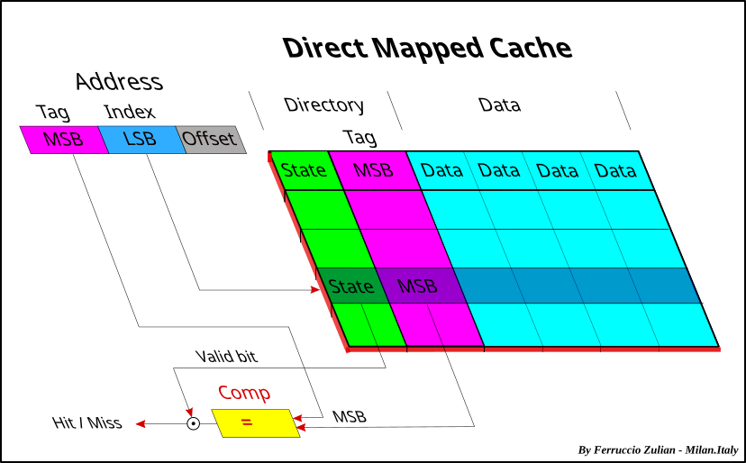
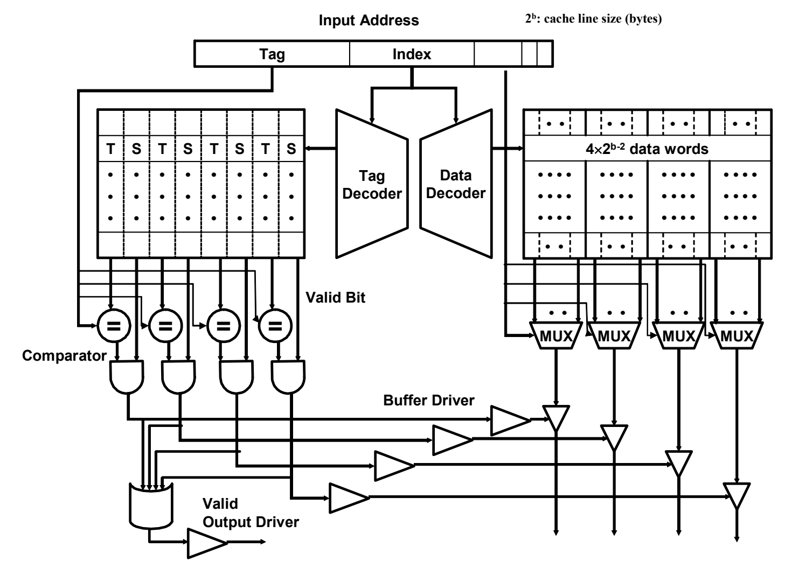

Where the bytes wait
Work through address mapping, locality, replacement, write policies and miss cost.
Map an address to a cache line
Temporal locality comes from reusing data. Spatial locality comes from accessing nearby bytes. The cache transfers a line at a time. A simple set-associative cache splits an address into tag, set index and byte offset, then compares tags of all valid ways in that set.
- 64 B / lineOffset uses six low bits.
- 128 sets32 KiB ÷ (64 B × 4) gives 128 sets. Index uses seven bits.
- 4 ways / setAt most four valid lines with distinct tags fit in the selected set.
In this model 0x1234 maps to set 72, offset 52, tag 0. Actual LLCs may hash physical bits into slices and sets.
Cold misses happen on first touch, capacity misses occur when the working set exceeds available capacity, and conflict misses occur when too many active lines map to one set. In multicore systems, invalidation can cause additional coherence misses. Increasing ways can reduce conflicts while changing lookup cost.
- Tag
0x0Bits above bit 12 distinguish lines in a set. - Set index
1001000₂ = 72Bits 12–6 select one row. - Byte offset
110100₂ = 52Bits 5–0 select a byte in that line.
32 KiB ÷ (4 ways × 64 bytes) = 128 sets. The drawing follows a simple physically indexed cache.
| Set | Way 0 | Way 1 | Way 2 | Way 3 |
|---|---|---|---|---|
| 71 | tag 0 | tag 3 | tag 5 | — |
| 72 | tag 0 ✓ | tag 3 | tag 6 | — |
| 73 | tag 0 | tag 2 | — | — |
Each populated cell represents a full line plus metadata. Tag 0 in set 71 is irrelevant to this lookup. A dash indicates an invalid slot.
- Earlier bytes
0…510x1200…0x1233 - Selected byte
520x1234 - Later bytes
53…630x1235…0x123f
The line starts at 0x1200. Address 0x1238 hits the same line at offset 56. Address 0x3234 selects the same set and offset but has tag 1, so it misses in the snapshot above.

Follow Index to a row, then compare Tag. This is the one-way version of the preceding four-way example.
Ferry24.Milan · Wikimedia Commons · CC BY-SA 4.0 · Unmodified SVG

Start at Index: the two decoders select the same set in the tag and data arrays. On the left, four comparators check tags in parallel, and each result is gated by that way’s valid bit. On the right, the offset feeds the word multiplexers (MUX); only the matching valid way drives the output.
MIT OpenCourseWare · 6.823 Handout 6, Figure H6-B · CC BY-NC-SA 4.0 · Cropped from the PDF; original English labelsFollow a miss and a dirty eviction
- Check waysNo valid tag matches in the selected set.
- Select a slotUse a free way or choose a victim.
- Preserve dirty dataWrite back a modified victim if needed.
- Fill and resumeInstall the incoming line and satisfy the waiting load.
A core may overlap the writeback and the new request. The boxes show the logical responsibilities.
On a read miss, an implementation can allocate an entry to track the outstanding request, fetch the line from a lower level and resume dependent loads once data arrives. A replacement policy selects a victim line. With write-back, a dirty victim needs writeback. Write-through forwards writes to the lower level, usually through buffering. On a store miss, write-allocate fills the line, while no-write-allocate can send the store onward.
AMAT = hit time + miss rate × miss penalty for a single cache level. With 1 ns hit time, 5% miss rate and 40 ns extra penalty, AMAT is 3 ns. For multiple levels use the lower level’s conditional miss rate when following an upper-level miss. Prefetching and overlapped requests change observed throughput.
L1I and L1D often separate instruction and data paths. The size, associativity, sharing and inclusion of L2 and LLC depend on the processor. x86 software can consult CPUID cache parameters where supported. RISC-V cache geometry depends on the core and platform, and optional cache-block extensions expose particular maintenance operations.